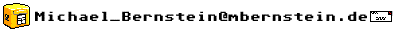

Dieser Text kann per Definition nie aktuell sein. Wer Fehler findet, Anregungen hat oder mitarbeiten möchte kann sich bei mir melden:

Dieser Text ist unter der GNU General Public Licence veröffentlicht.